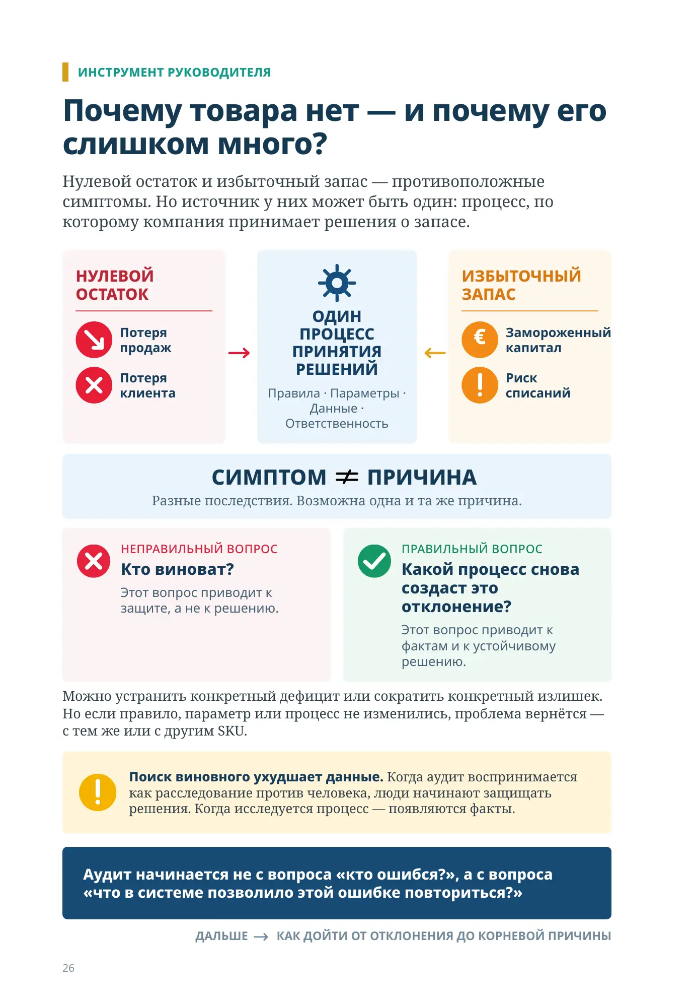
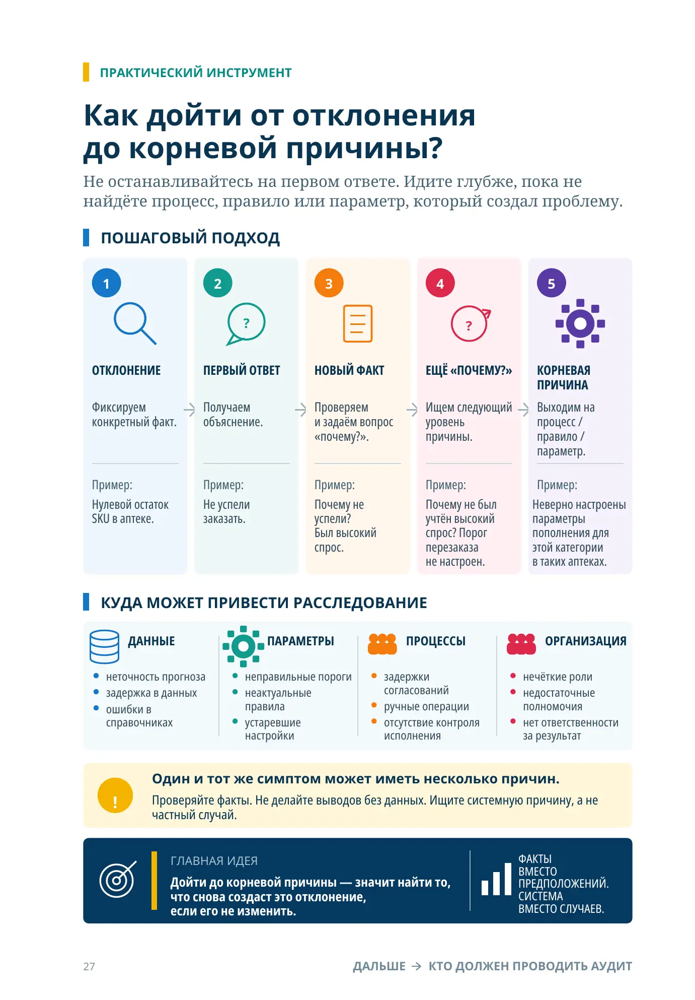
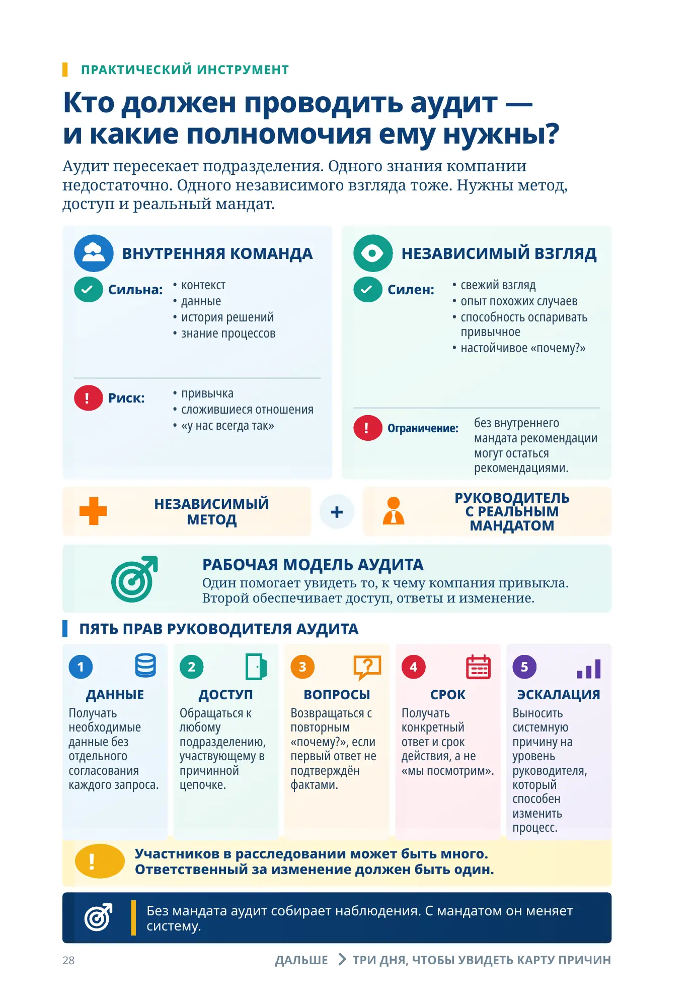
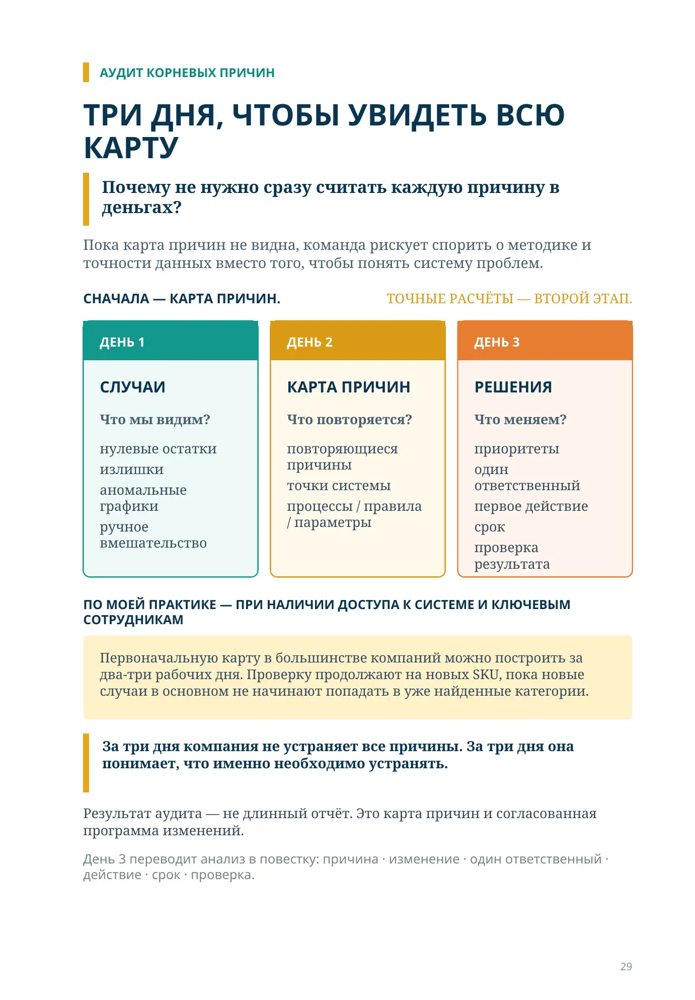
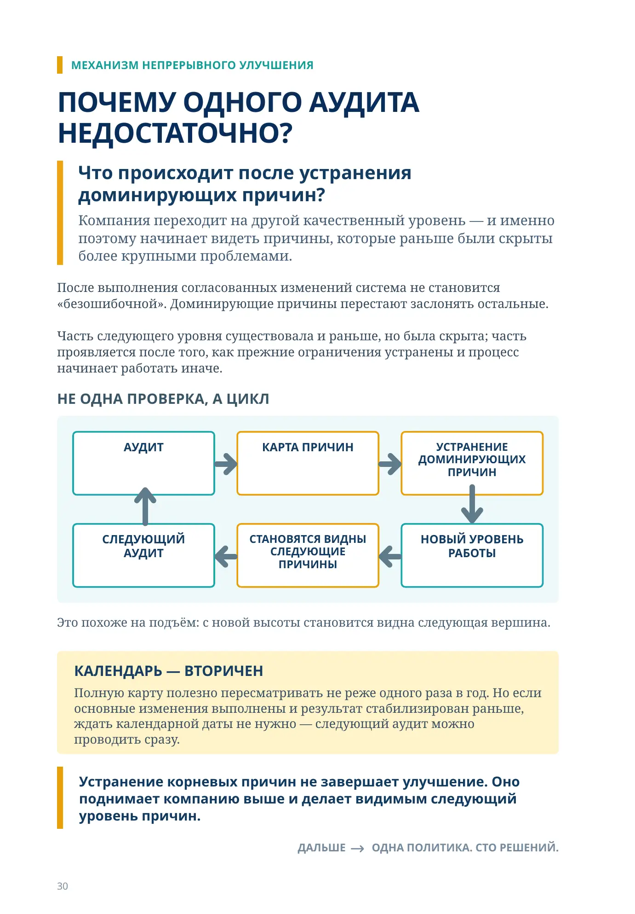
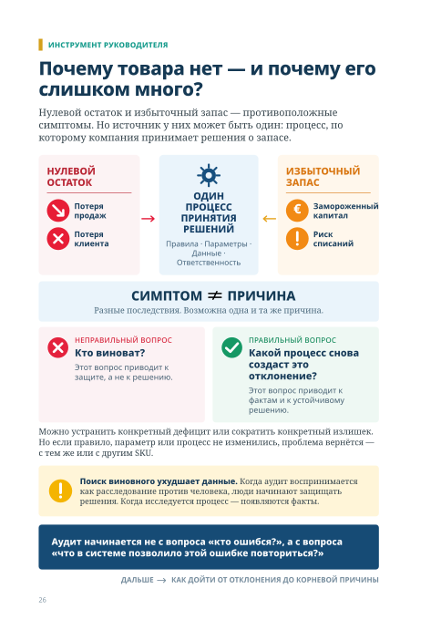
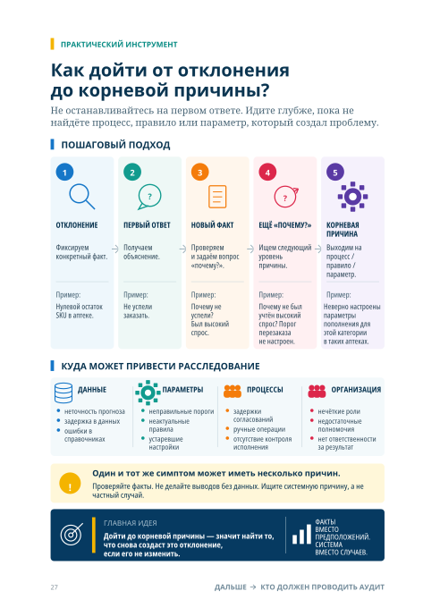
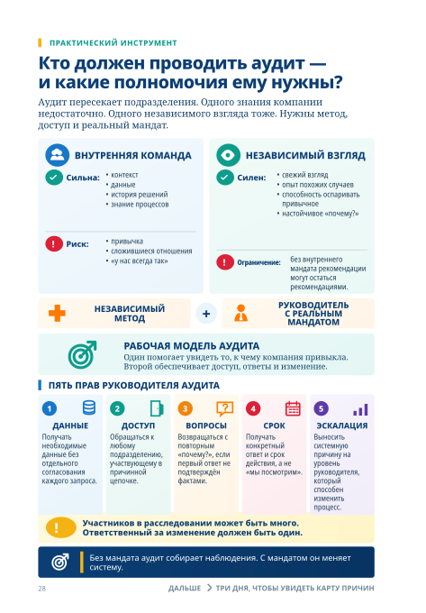
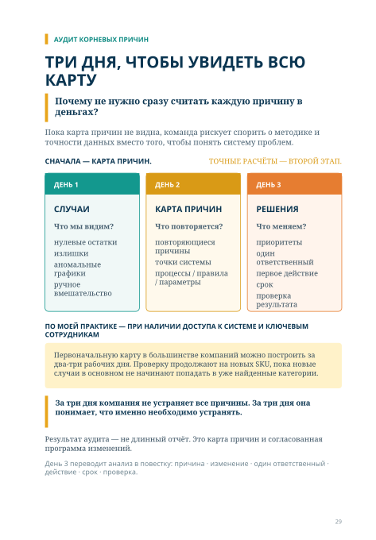
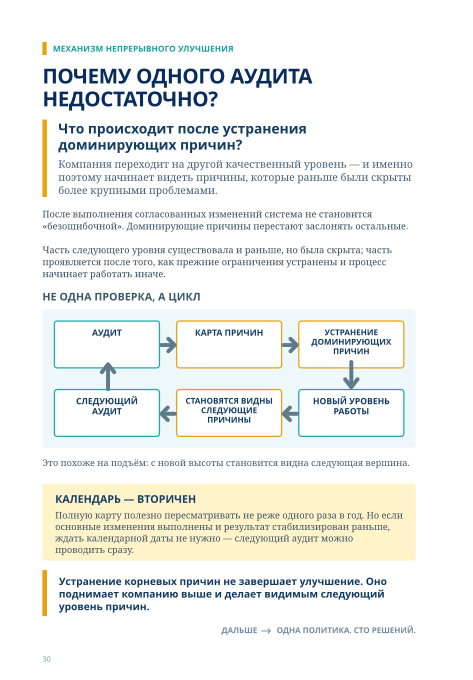

Аудит корневых причин запасов

Почему товара нет — и почему его слишком много?
Нулевой остаток и избыточный запас — противоположные симптомы. Но источник у них может быть один: процесс, по которому компания принимает решения о запасе.
НУЛЕВОЙ ОСТАТОК
↘Потеря продаж
×Потеря клиента
ОДИН ПРОЦЕСС ПРИНЯТИЯ РЕШЕНИЙ
Правила · Параметры · Данные · Ответственность
ИЗБЫТОЧНЫЙ ЗАПАС
€Замороженный капитал
!Риск списаний
СИМПТОМ ≠ ПРИЧИНА
Разные последствия. Возможна одна и та же причина.
НЕПРАВИЛЬНЫЙ ВОПРОСКто виноват?
Этот вопрос приводит к защите, а не к решению.
ПРАВИЛЬНЫЙ ВОПРОСКакой процесс снова создаст это отклонение?
Этот вопрос приводит к фактам и к устойчивому решению.
Можно устранить конкретный дефицит или сократить конкретный излишек. Но если правило, параметр или процесс не изменились, проблема вернётся — с тем же или с другим SKU.
Поиск виновного ухудшает данные. Когда аудит воспринимается как расследование против человека, люди начинают защищать решения. Когда исследуется процесс — появляются факты.
Аудит начинается не с вопроса «кто ошибся?», а с вопроса «что в системе позволило этой ошибке повториться?»
ДАЛЬШЕ → КАК ДОЙТИ ОТ ОТКЛОНЕНИЯ ДО КОРНЕВОЙ ПРИЧИНЫ

ПРАКТИЧЕСКИЙ ИНСТРУМЕНТ
Как дойти от отклонения до корневой причины?
Не останавливайтесь на первом ответе. Идите глубже, пока не найдёте процесс, правило или параметр, который создал проблему.
ПОШАГОВЫЙ ПОДХОД
ОТКЛОНЕНИЕ
Фиксируем конкретный факт.
Пример:
Нулевой остаток SKU в аптеке.
ПЕРВЫЙ ОТВЕТ
Получаем объяснение.
Пример:
Не успели заказать.
НОВЫЙ ФАКТ
Проверяем и задаём вопрос «почему?».
Пример:
Почему не успели? Был высокий спрос.
ЕЩЁ «ПОЧЕМУ?»
Ищем следующий уровень причины.
Пример:
Почему не был учтён высокий спрос? Порог перезаказа не настроен.
КОРНЕВАЯ ПРИЧИНА
Выходим на процесс / правило / параметр.
Пример:
Неверно настроены параметры пополнения для этой категории в таких аптеках.
КУДА МОЖЕТ ПРИВЕСТИ РАССЛЕДОВАНИЕ
ДАННЫЕ
неточность прогноза
задержка в данных
ошибки в справочниках
ПАРАМЕТРЫ
неправильные пороги
неактуальные правила
устаревшие настройки
ПРОЦЕССЫ
задержки согласований
ручные операции
отсутствие контроля исполнения
ОРГАНИЗАЦИЯ
нечёткие роли
недостаточные полномочия
нет ответственности за результат
Один и тот же симптом может иметь несколько причин.
Проверяйте факты. Не делайте выводов без данных. Ищите системную причину, а не частный случай.
ГЛАВНАЯ ИДЕЯ
Дойти до корневой причины — значит найти то, что снова создаст это отклонение, если его не изменить.
ФАКТЫ ВМЕСТО ПРЕДПОЛОЖЕНИЙ. СИСТЕМА ВМЕСТО СЛУЧАЕВ.
ДАЛЬШЕ
КТО ДОЛЖЕН ПРОВОДИТЬ АУДИТ

ПРАКТИЧЕСКИЙ ИНСТРУМЕНТ
Кто должен проводить аудит — и какие полномочия ему нужны?
Аудит пересекает подразделения. Одного знания компании недостаточно. Одного независимого взгляда тоже. Нужны метод, доступ и реальный мандат.
ВНУТРЕННЯЯ КОМАНДА
Сильна:
контекст
данные
история решений
знание процессов
Риск:
привычка
сложившиеся отношения
«у нас всегда так»
НЕЗАВИСИМЫЙ ВЗГЛЯД
Силен:
свежий взгляд
опыт похожих случаев
способность оспаривать привычное
настойчивое «почему?»
Ограничение:
без внутреннего мандата рекомендации могут остаться рекомендациями.
НЕЗАВИСИМЫЙ МЕТОД + РУКОВОДИТЕЛЬ С РЕАЛЬНЫМ МАНДАТОМ
РАБОЧАЯ МОДЕЛЬ АУДИТА
Один помогает увидеть то, к чему компания привыкла. Второй обеспечивает доступ, ответы и изменение.
ПЯТЬ ПРАВ РУКОВОДИТЕЛЯ АУДИТА
ДАННЫЕ
Получать необходимые данные без отдельного согласования каждого запроса.
ДОСТУП
Обращаться к любому подразделению, участвующему в причинной цепочке.
ВОПРОСЫ
Возвращаться с повторным «почему?», если первый ответ не подтверждён фактами.
СРОК
Получать конкретный ответ и срок действия, а не «мы посмотрим».
ЭСКАЛАЦИЯ
Выносить системную причину на уровень руководителя, который способен изменить процесс.
Участников в расследовании может быть много. Ответственный за изменение должен быть один.
Без мандата аудит собирает наблюдения. С мандатом он меняет систему.
ДАЛЬШЕ
ТРИ ДНЯ, ЧТОБЫ УВИДЕТЬ КАРТУ ПРИЧИН

ТРИ ДНЯ, ЧТОБЫ УВИДЕТЬ ВСЮ КАРТУ
Почему не нужно сразу считать каждую причину в деньгах?
Пока карта причин не видна, команда рискует спорить о методике и точности данных вместо того, чтобы понять систему проблем.
ДЕНЬ 1
СЛУЧАИ
Что мы видим?
нулевые остатки
излишки
аномальные графики
ручное вмешательство
ДЕНЬ 2
КАРТА ПРИЧИН
Что повторяется?
повторяющиеся причины
точки системы
процессы / правила / параметры
ДЕНЬ 3
РЕШЕНИЯ
Что меняем?
приоритеты
один ответственный
первое действие
срок
проверка результата
ПО МОЕЙ ПРАКТИКЕ — ПРИ НАЛИЧИИ ДОСТУПА К СИСТЕМЕ И КЛЮЧЕВЫМ СОТРУДНИКАМ
Первоначальную карту в большинстве компаний можно построить за два-три рабочих дня. Проверку продолжают на новых SKU, пока новые случаи в основном не начинают попадать в уже найденные категории.
За три дня компания не устраняет все причины. За три дня она понимает, что именно необходимо устранять.
Результат аудита — не длинный отчёт. Это карта причин и согласованная программа изменений.
День 3 переводит анализ в повестку: причина · изменение · один ответственный · действие · срок · проверка.

ПОЧЕМУ ОДНОГО АУДИТА НЕДОСТАТОЧНО?
Что происходит после устранения доминирующих причин?
Компания переходит на другой качественный уровень — и именно поэтому начинает видеть причины, которые раньше были скрыты более крупными проблемами.
После выполнения согласованных изменений система не становится «безошибочной». Доминирующие причины перестают заслонять остальные.
Часть следующего уровня существовала и раньше, но была скрыта; часть проявляется после того, как прежние ограничения устранены и процесс начинает работать иначе.
НЕ ОДНА ПРОВЕРКА, А ЦИКЛ
АУДИТ
КАРТА ПРИЧИН
УСТРАНЕНИЕ ДОМИНИРУЮЩИХ ПРИЧИН
НОВЫЙ УРОВЕНЬ РАБОТЫ
СТАНОВЯТСЯ ВИДНЫ СЛЕДУЮЩИЕ ПРИЧИНЫ
СЛЕДУЮЩИЙ АУДИТ
Это похоже на подъём: с новой высоты становится видна следующая вершина.
КАЛЕНДАРЬ — ВТОРИЧЕН
Полную карту полезно пересматривать не реже одного раза в год. Но если основные изменения выполнены и результат стабилизирован раньше, ждать календарной даты не нужно — следующий аудит можно проводить сразу.
Устранение корневых причин не завершает улучшение. Оно поднимает компанию выше и делает видимым следующий уровень причин.